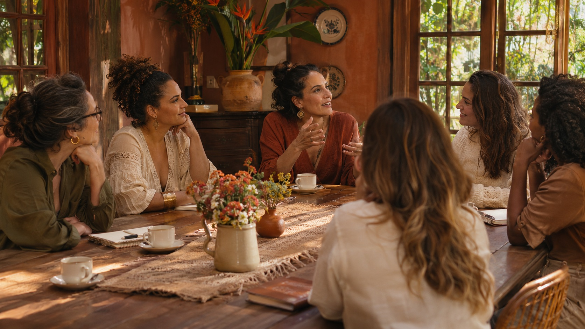
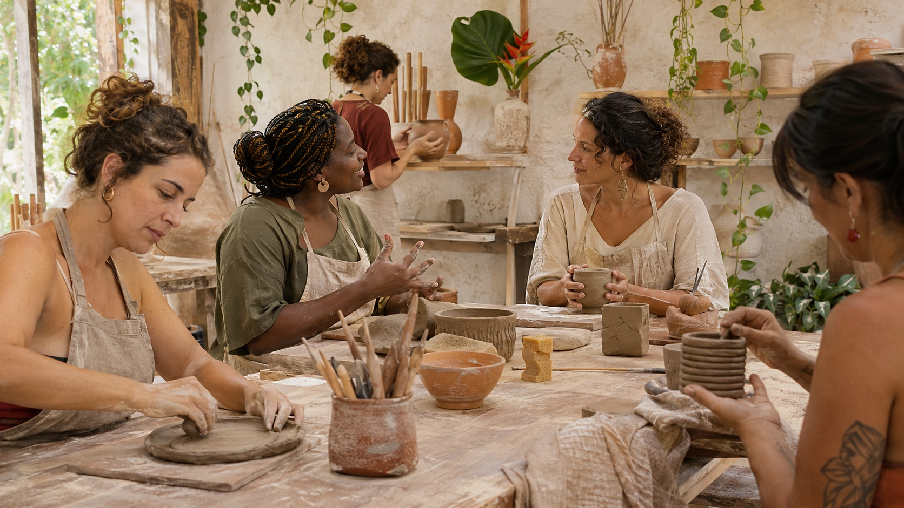

Proximidade
Oportunidades de apresentar sua proposta em um ambiente de encontros e interesses compartilhados.
Para marcas que acreditam no poder das conexões
Algumas conexões vão além do encontro. Elas criam histórias, despertam descobertas e permanecem.
O Life Mama Club conecta mulheres, experiências e marcas que acreditam no valor das relações humanas. Convidamos empresas a participar desse universo por meio de ativações, encontros, experiências cocriadas e iniciativas que aproximam marcas de pessoas de maneira genuína e significativa.
Mais do que apresentar produtos ou serviços, queremos criar oportunidades para que sua marca seja conhecida, experimentada e lembrada pelo que proporciona.

Nossa essência
O Life Mama Club é uma comunidade privada para mães que desejam cultivar conexões valiosas, desenvolver projetos, ampliar perspectivas e experimentar diferentes dimensões da vida.
Reunimos mulheres com diferentes trajetórias, interesses, talentos e ambições.
Mulheres que empreendem, lideram, criam, trabalham, aprendem, se movimentam e seguem descobrindo novas formas de viver.
A maternidade é o elo que as aproxima, mas não limita suas identidades.
E é justamente nessa diversidade de interesses que surgem oportunidades para marcas que desejam construir relações mais próximas e relevantes.
Acreditamos que uma marca pode fazer parte da vida das pessoas antes mesmo de fazer parte de suas escolhas.
Por que estar conosco
Vivemos cercadas por mensagens, ofertas e estímulos. Mas aquilo que realmente nos marca costuma nascer de uma experiência.
Um lugar que descobrimos. Um produto que experimentamos. Uma conversa que transforma nossa percepção. Um encontro que desperta novas possibilidades.
No Life Mama Club, buscamos criar oportunidades para que marcas participem desses momentos de maneira natural, relevante e cuidadosamente pensada.
Oportunidades de apresentar sua proposta em um ambiente de encontros e interesses compartilhados.
Possibilidades de transformar produtos, serviços e conceitos em vivências que podem ser experimentadas e compartilhadas.
Conexões construídas por meio de experiências que favorecem a identificação e o diálogo.
Liberdade para desenvolver iniciativas originais, conectando os objetivos da marca aos interesses da comunidade.
Porque a presença de uma marca ganha outro significado quando ela contribui para a experiência.
Possibilidades de parceria
Cada marca tem sua essência. Cada experiência, seu propósito.
Por isso, acreditamos em parcerias flexíveis, criativas e construídas a partir de interesses compartilhados.
Associe sua marca a encontros e experiências do Life Mama Club nas áreas de wellness, esporte, criatividade, cultura, desenvolvimento e lifestyle. Formatos de presença e contrapartidas são definidos em conjunto.
Crie experiências que permitam apresentar e experimentar seus produtos ou serviços de forma sensorial, próxima e contextualizada.
Abra as portas da sua empresa para receber uma experiência do Club. Hotéis, restaurantes, estúdios, espaços culturais, clínicas e boutiques podem se transformar em cenários de encontros.
Vamos construir algo que ainda não existe? Uma aula especial, oficina criativa, encontro com especialista ou vivência desenvolvida a partir do universo da sua marca.
Apresente produtos, lançamentos e serviços por meio de seleções especiais, gifting e experiências de experimentação que façam sentido para a comunidade.
Crie oportunidades de relacionamento por meio de condições especiais, experiências exclusivas, serviços e benefícios para as integrantes.
Para empresas que desejam presença contínua, podemos conectar diferentes experiências, conteúdos e iniciativas ao longo de uma temporada.
Estamos abertas a projetos de educação, cultura, inovação, desenvolvimento feminino e impacto social quando existe afinidade de propósito e possibilidade de construção conjunta.
Cada colaboração é avaliada individualmente. Formatos, investimentos, entregas e contrapartidas são definidos conforme os objetivos e as características de cada parceria.
Universos que se conectam
Buscamos marcas que possam contribuir com os diferentes interesses que fazem parte da vida das mulheres.
Não é necessário que sua empresa tenha a maternidade como foco. O que valorizamos é a conexão entre os valores da marca, aquilo que ela oferece e as possibilidades que podemos proporcionar à comunidade.

Nossa curadoria
Acreditamos que as melhores parcerias acontecem quando existe afinidade.
Por isso, cada proposta passa por uma curadoria que considera a essência da marca, a relevância de sua contribuição e a qualidade da experiência que podemos construir.
Valorizamos empresas que respeitam as pessoas, cuidam daquilo que oferecem e compreendem que relações significativas são construídas com atenção e consistência.
Há espaço para marcas consolidadas, negócios independentes e novas iniciativas. O tamanho da empresa não define o valor de sua contribuição.
Mais importante do que estar presente é fazer sentido estar ali.
Como funciona
Um processo simples para conhecermos sua marca, identificarmos afinidades e construirmos uma possibilidade em conjunto.
Preencha uma breve candidatura contando sobre sua empresa, suas ideias e o que gostaria de construir conosco.
Nossa equipe avaliará a proposta, considerando o alinhamento com o Life Mama Club e as oportunidades de colaboração.
Quando identificarmos uma oportunidade, entraremos em contato para conversar sobre objetivos, possibilidades, formatos e condições.
Com a parceria formalizada, seguimos para o planejamento e a realização da iniciativa, respeitando cada marca e a comunidade.
A candidatura é gratuita e não representa compromisso comercial ou garantia de aprovação.
Convite final
Talvez seja um espaço que merece ser descoberto. Um produto que pode fazer parte de novos hábitos. Uma experiência que desperta interesses.
Ou uma ideia que ainda não encontrou o encontro certo para acontecer.
Queremos conhecer sua marca e descobrir o que podemos construir juntas.
Porque as melhores conexões não são apenas aquelas que aproximam pessoas e marcas. São aquelas que criam novas possibilidades para todos que fazem parte.
Apresente sua proposta para a curadoria de parcerias do Life Mama Club.
Perguntas frequentes
Não. O Life Mama Club reúne mulheres com interesses que vão muito além da maternidade. Buscamos empresas que se conectem com esses diferentes universos e possam contribuir com experiências relevantes.
Sim. As parcerias podem acontecer em uma edição específica ou fazer parte de projetos de maior duração.
Sim. Estamos abertas a conhecer espaços que possam receber encontros, oficinas, experiências e atividades da comunidade.
Não necessariamente. Podemos avaliar patrocínio, fornecimento de produtos e serviços, cessão de espaços e cocriação. As condições são definidas conforme cada projeto.
Sim. Gostamos de conhecer novas ideias e formatos que tragam valor para a comunidade e tenham afinidade com a proposta do Club.
As entregas e condições comerciais são desenvolvidas individualmente, considerando objetivos, escopo, formato da parceria e recursos envolvidos.
Não. Todas as propostas passam por curadoria, e a realização depende de alinhamento, disponibilidade e viabilidade.